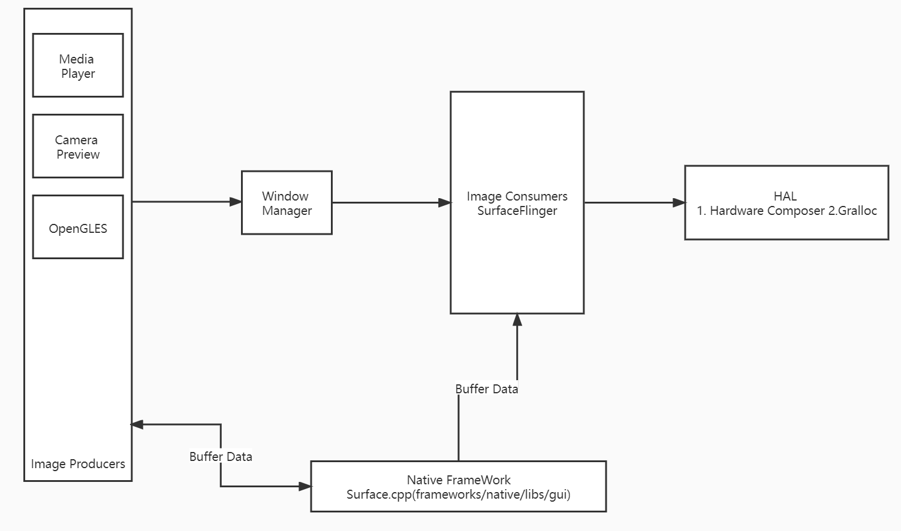
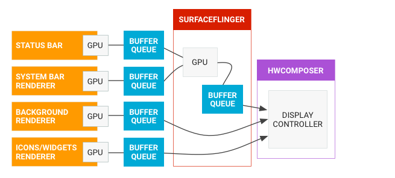
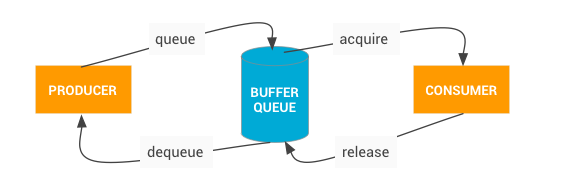

Andorid Graphics学习
Graphics
1. Android 绘制API
1.1 提供了图像渲染API可以用来绘制2D和3D,开发者绘制图像的三种方式,Canvas,OpenGLES,Vulkan。前两种我使用的较多.
1.2 例如：曾经使用TFLite对同一个物体中，不同位置进行识别后，然后使用Canvas对不同位置进行2D贴图，以实现在真实图体中浮现AI识别的功能。
1.3 例如：在相机纹理，滤镜处理中使用OpenGLES以及GLSL对相机的原始纹理进行处理后再次显示，同时在纹理中进行贴图处理，使用OpenGLES可满足
1.2 绘制流程
从系统图像渲染角度来看，无论使用哪个API，一切内容均会以Surface进入缓冲区队列，最终被SurfaceFlinger消耗合成屏幕

2.1 生产方 OpenGLES Canvas mediaServer视频解码器
2.2 消费者 SurfaceFlinger，消费可见的Surface,并通过窗口管理器中的信息将其合成到屏幕
2.3 SurfaceFlinger 使用OpenGLES进行缓冲区合成后 通过Hardware Compose执行后面工作，作为渲染的中心点
1.3 数据流
3.1 BufferQueue 作为不同组件间的粘合剂，组成方式为一对队列.
3.2 不同的渲染器(主屏幕,状态栏,系统界面)，SurfaceFligner 是合成器, HwComposer是合成器


1.4 BufferQueue的模式
4.1 同步模式 默认模式，不舍弃任何缓冲区，阻塞并等待可用缓冲区
4.2 非阻塞模式，生成错误
4.3 舍弃模式
2. 图形组件
2.1 SurfaceView和GLSurfaceView
2.1.1 GLSurfaceView平常使用的较多，可以通过自定义Render来进行调整画面比例，通过自定义Shader调整各种特效等。官方的解释：GLSurfaceView提供了用于管理EGL上下方(系统封装好),线程见通信,与Activity声明周期交互的辅助类
2.1.2 SurfaceView的View组件由SurfaceFlinger合成，与应用界面隔离。这也就是它是单独绘制出来的，与Activity的绘制无关。[SurfaceView](https://source.android.google.cn/devices/graphics/arch-sv-glsv?hl=zh-cn)
2.2 SurfaceTexture
2.2.1 SurfaceTexture 将 Surface 和 GLES 纹理相结合来创建 BufferQueue，而您的应用是 BufferQueue 的消费者。我经常使用的方式为：创建一个外部纹理ID后，通过SurfaceText将其纹理绑定，并生成Surface作为Target.这也就是提到的作为BufferQueue消费者。经常在GLSurfaceView以及Render中作为刷新onDraw()作用。
外部纹理OES与传统纹理区别Texture2D
外部纹理直接在从 BufferQueue 接收的数据中渲染纹理多边形。
外部纹理渲染程序的配置与传统的 GLES 纹理渲染程序不同。
外部纹理不一定可以执行所有传统的 GLES 纹理活动
2.3 TextureView
2.3.1 TextureView 结合了 View 和 SurfaceTexture。TextureView 对 SurfaceTexture 进行包装，并负责响应回调以及获取新的缓冲区.
2.3.2 接受缓冲区的内容作为数据源，然后根据View的状态后，渲染在对应的位置
3. SurfaceFlinger
SurfaceFlinger 接受缓冲区，对它们进行合成，然后发送到屏幕。WindowManager 为 SurfaceFlinger 提供缓冲区和窗口元数据，而 SurfaceFlinger 可使用这些信息将 Surface 合成到屏幕。
本博客所有文章除特别声明外，均采用 CC BY-SA 4.0 协议 ，转载请注明出处！